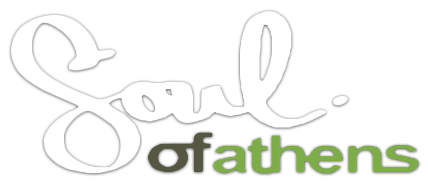
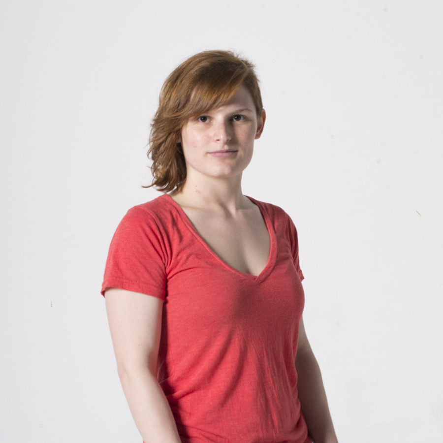
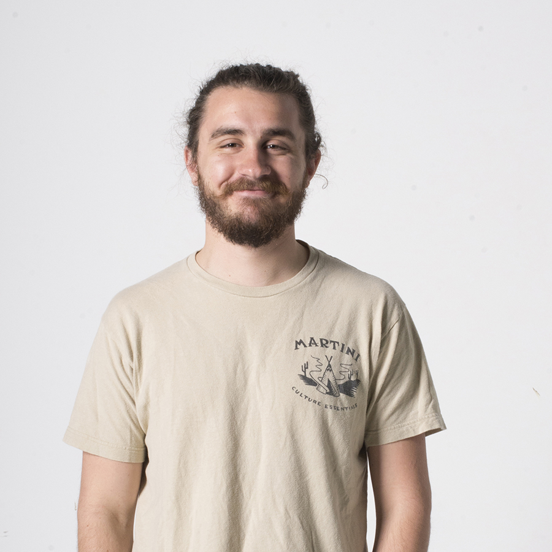
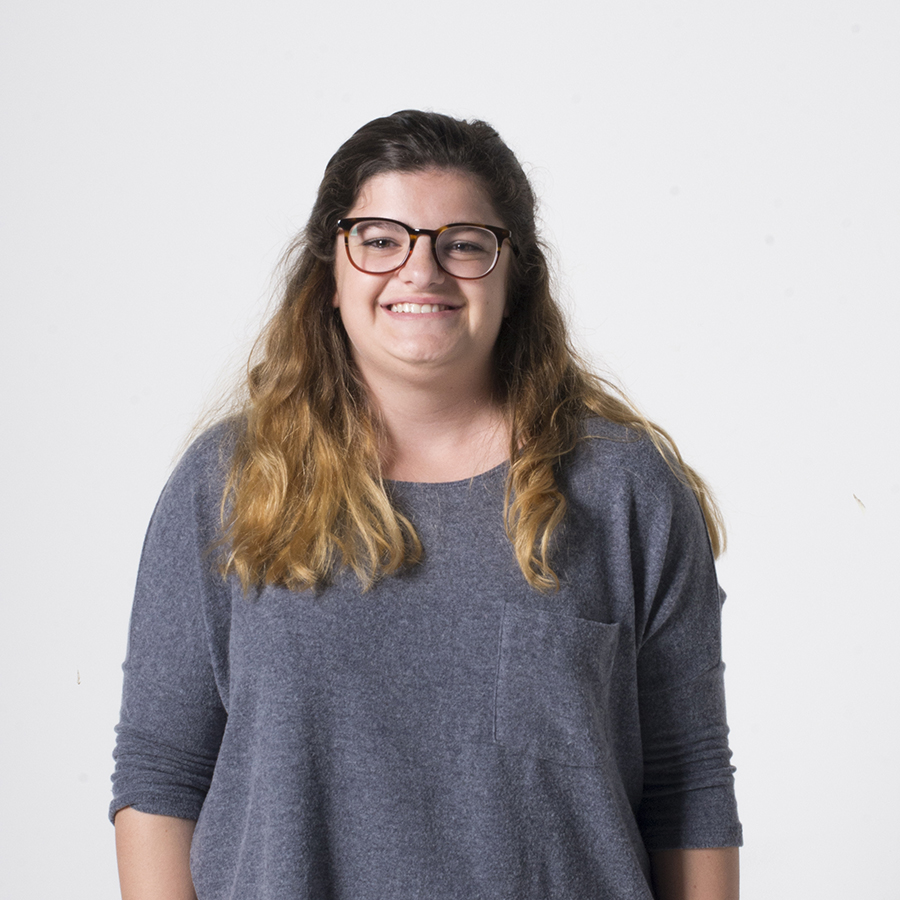
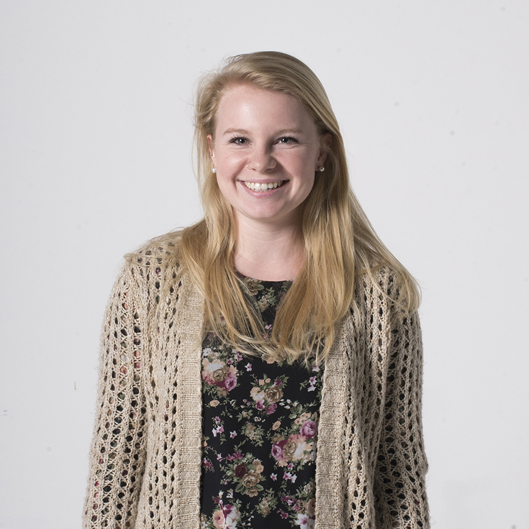
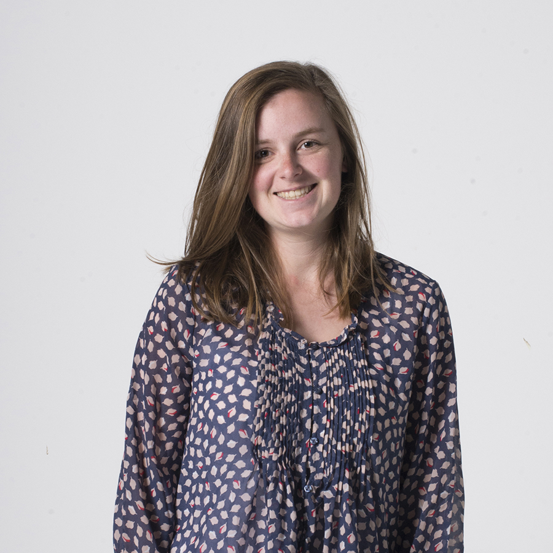
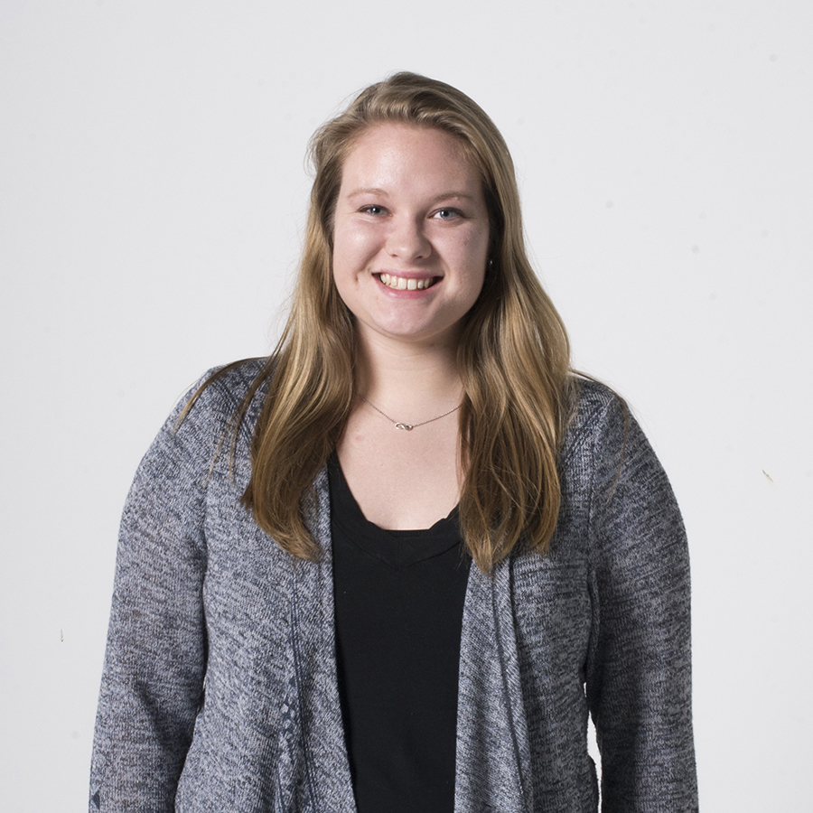
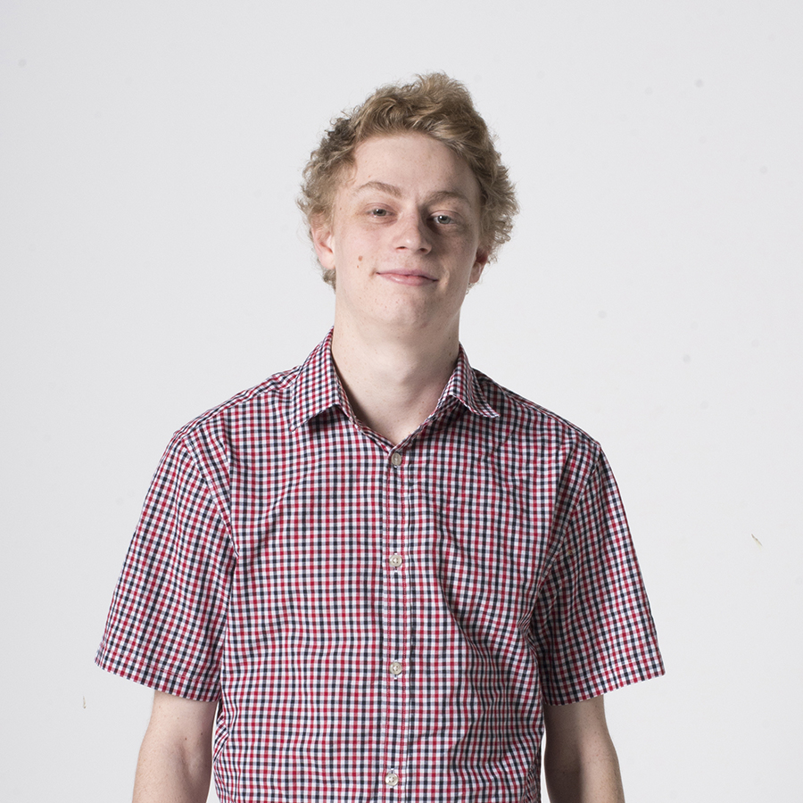
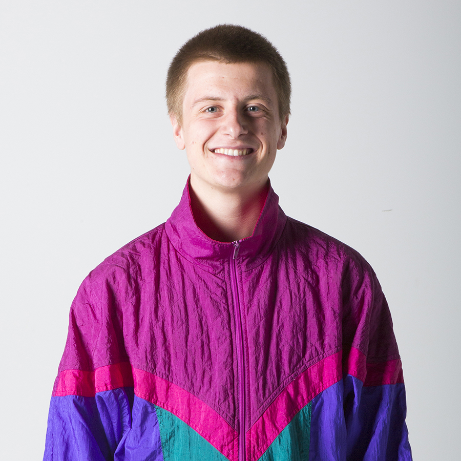

ABOUT SOUL OF ATHENS
This is the 10th edition of the Soul of Athens project that highlights student talent and engages audiences. What began in 2007 as a one-time student experiment in online storytelling has evolved into an annual student-led publication.
Each year a group of students from within the School of Visual Communication and across the Ohio University campus start a publishing organization from scratch learning how to deal with work-flow, organization, and personnel issues. Along the way students create, edit, and design compelling stories. Every time we strive to do things differently. We explore new technologies and ways of telling stories. This year’s effort includes 360-degree video — a challenge to both the content creators and the design team.
The experience of working on Soul of Athens has helped launch careers, and through the years, the project and its component parts have garnered national recognition. The credits have come to read as a Who’s Who among alumni and the industry. One of the initial leaders in the 2007 inaugural edition, Zack Wise, went on to be part of a Pultizer Prize win at the Las Vegas Sun before joining the industry-leading web design team for the New York Times. Wise now develops new technologies for journalists at the Knight Lab and teaches at Northwestern University. Chad Stevens has a feature-length documentary film Overburden making the rounds of film festivals and is teaching at the University of North Carolina. Eric Mayville launched his own creative agency Wondersauce with offices in New York and Columbus. Sonya Hebert went on to be a staff photographer at the White House before moving to The Dallas Morning News. Jennifer Diamond was hired as an art director with Whirl magazine and now runs her own design firm in Pittsburg. And Sharea Terrell went on to work on projects with NASA, This Old House magazine, and Redwood Living.
These are just a few of the students who broke ground in 2007. Each subsequent year’s teams are filled with what have become industry leaders. In addition, a series of outstanding faculty have mentored the Soul of Athens groups — people like Terry Eiler, Becky Sell, Brandon Flayler, Anselm Bradford, Nick Steinbaeur, Lisa Villamil, and Mitch Casey. We invite you to wander the past projects and see both the work and the people who created these publications. The Soul of Athens is a visually rich, creative, and moving experience — just like it’s namesake.
-

In a brave new world of multimedia journalism, the award-winning School of Visual Communication at Ohio University led by Zach Wise of digitalartwork.net and Brain Storm of MediaStorm.org dares to ask the question: What is the soul of the 200-year-old community of Athens, Ohio and the county that surrounds it? Athens soul is restless. Its stories lie beneath the bricks, waiting to be exposed. Precariously balanced on the tip of cosmopolitan Appalachia, its uninhibited subcultures test the bounds of predictability.
-
One year after the first edition of Soul of Athens was launched in May 2007, the soul re-opens its windows, offering outsiders a freshly intimate look inside Ohio’s Athenian community. But this time our stories follow a thread that weaves a theme in and out of the county’s fabric: the pursuit of wellness.
-
Within the rolling expanse of Southeast Ohio, the county of Athens boasts breathtaking landscapes and a diverse range of characters. From sustainable farmland to environmental degradation, rich cultural centers to impoverished rural villages, and folk to funk, Soul of Athens illuminates the distinct features that compose Athens’ soul. Soul of Athens is an innovative online publication that studies the contrasts of this Appalachian county through a collection of timeless stories and multimedia presentations. The project gives voice to a diverse group of individuals intertwined by a common sense of place through stories that resonate universally.
-
This year we will take you on a journey where you can explore the Soul of Athens at an easy, inviting pace. We've focused our stories through the lens of five themed editions: Experience, Passage, Expression, Shelter, and Thrive. One edition will be released every two weeks. We are integrating social media tools for Facebook and Twitter in a unique way. You will be able to connect with the pulse of Athens and we hope you will feel welcome to participate in the dialog. We are also providing richly featured interactive PDFs, a mashup feature called "Soul Mixer" and the site is optimized for mobile phones.
-
The stories in this project examine the American Dream — how the dream has changed, how it persists, as well as the myths and realities of its unending pursuit. By telling these stories in the small towns of Southeast Ohio, our goal is to help folks better understand our communities, our neighbors and ourselves.
-
Often called the Swing State, Ohio is traditionally key in determining the outcome of presidential elections. If a candidate wishes to win over the nation, it is vital to win over Ohio. What issues affect our state and how will they impact our vote? What changes do we want to see? What do we hold dear? In an election year, it is important to recognize what matters.
Turning Point, the theme of the 2013 edition of Soul of Athens, became a call for stories that revealed the diverging paths of the people of Southeast Ohio. While every life has a turning point, the paths we take quickly make us unique. This year's Soul of Athens seeks to trace profound changes back to the moments — big or small — that marked a fork in the road.
The Water Project is a public clearinghouse for information related to environmental water issues within the Appalachian Ohio Valley. Its mission is to bring information to citizens, policymakers and researchers from Ohio University’s journalism and academic communities and to provide a forum for community blogs and action groups. The Water Project is as much a public clearinghouse for information as it is an incubator for ideas and solutions.

This year the project shifted from a singular presentation to six teams working toward different goals of their own pitch and selection. An attempt to fuel the entrepreneurial thinking of students as they enter the new media landscape, each team began with an original concept and adapted as it grew over the Spring semester.

Now celebrating the 10th anniversary of Soul, the 2016 installment has taken a new direction. The Soul of Athens team carries on the storytelling tradition beyond just Athens, Ohio but instead across the entire region to uncover why people call Appalachia home.

ATISH BAIDYA / Editor
ARIELLE BERGER / Content Creator
NICK BOLIN / Content Creator
JILLYAN BURNS / Content Creator
ALEX CENCI / Content Creator
MARK CLAVIN / Content Creator
JENNIFER COOMBES / Content Creator
PATRICK CONNOLLY / Content Creator
ANDIE DANESI / Designer
ALAINA DUTY / Web Developer
SARAH ERICKSON / Designer
TAYLOR FEENEY / Designer
SONJA FOSTER / Content Creator

SAM GINSBURG / Content Creator
ISAAC HALE / Content Creator

OLIVER HAMLIN / Content Creator